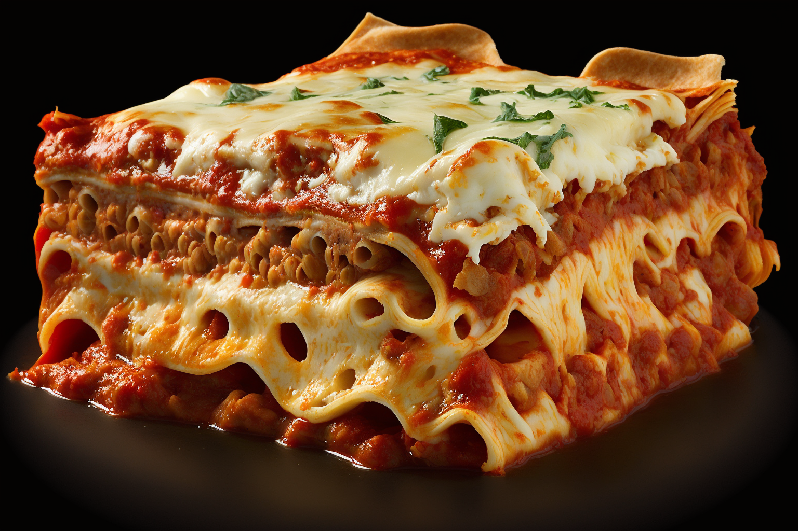

Cheap Lasagna

What is this lasagna?
Lasagna is a smart food. Make a large amount in a big pan and you'll have a lot of portions to put into the freezer. Here's a vegetarian option. Make a double size to have more to put in the freezer afterwards.
This lasagna is both good for vegetarians and people who can't handle dairy.
Ingredients for the mixture
- 1 Onion
- 2 Dl red lentils, dried
- 4 Dl smashed tomatoes
- 3 Dl water
- 2 Carrots
- 1 cube of vegetable broth
- 1 msk of tomatopure
- Two garlic pieces
- 1 msk herbs of desired variety
- Salt and pepper
- Oil to fry in
Ingredients for the cheese sauce
- 1.d dl créme fraiche
- 1 dl cheese, grated
- Salt and pepper
Instructions
Put the oven on 225 degrees celsius
Instructions for the filling
- Chop the onions and fry them until it's golden brown
- Wash the lentils in cold water. Put the lentils in the frying pan
- Put the smashed tomatoes in the pan.
- Grate the carrots and put them in the pan.
- Add the broth cubes and tomato pure.
- Let the mixture boil for about 10 minutes on medium heat. Stir once in a while.
Instructions for the cheese sauce
Don't let the cheese sauce boil
- Put the créme fraiche in a pan.
- Add the cheese while stiring it slowly.
Baking
- Butter a baking pan.
- Put a layer of tomato sauce in the bottom.
- Put lasagna plates on top
- Repeat step 1 through 3 until you've reached the top of the baking pan.
- Top of with a handful of cheese.
- Bake for 20 minutes in the oven.
- Enjoy!
Back to Homepage
Back to recipes